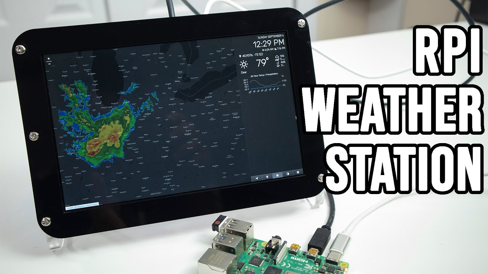
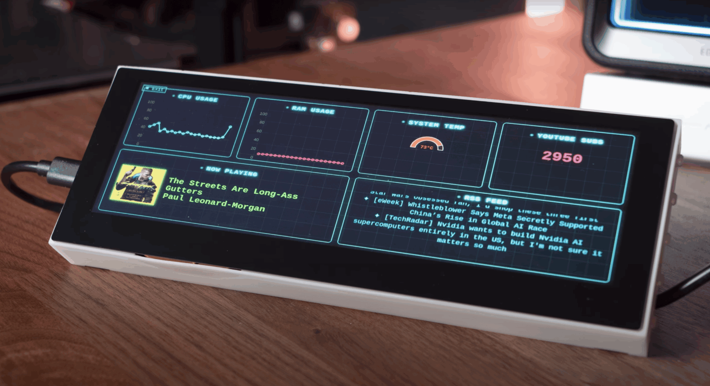

18 de mayo de 2026
Servidor de Minecraft en Raspberry Pi
Cómo una Raspberry Pi puede convertirse en un pequeño servidor privado de Minecraft para jugar con amigos dentro de una red local.
Leer postBlog de Raspberry Pi
Blog dedicado a explorar proyectos y prácticas con Raspberry Pi: servidores, automatización, sensores, videojuegos y hogar inteligente.
18 de mayo de 2026
Cómo una Raspberry Pi puede convertirse en un pequeño servidor privado de Minecraft para jugar con amigos dentro de una red local.
Leer post
18 de mayo de 2026
Una Raspberry Pi puede recopilar datos de temperatura, humedad y presión atmosférica usando sensores conectados por GPIO.
Leer post
18 de mayo de 2026
Cómo usar una Raspberry Pi como bloqueador de anuncios por medio de píhole
Leer postPiLab es un blog académico creado para practicar conceptos básicos de HTML y CSS mediante el desarrollo de un sitio web navegable, visualmente atractivo y enfocado en proyectos con Raspberry Pi.